음악 토크 채널 「악기포차」 회차
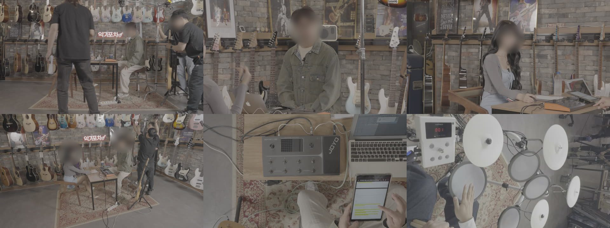
「다빈치 리졸브 칼질 잘하는 법」 영상에서 오셨다면
다빈치 리졸브 컷편집 4주. 실제 납품 원본으로 배웁니다.
같은 원본, 같은 다섯 컷입니다. 자른 자리만 다릅니다. 소리를 켜고 둘 다 들어 보세요.
실제 납품 작업

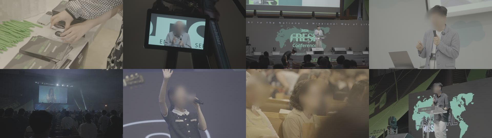
출연자 보호를 위해 얼굴은 흐리게 처리했습니다.
요즘 편집은 누구나 시작할 수 있습니다. 무료 프로그램도, 튜토리얼도 넘쳐나니까요.
그런데 다 잘라 놓은 영상을 처음부터 틀어 보면 어딘가 어색합니다. 보는 사람은 그 자리에서 넘깁니다.
그래서 필요한 건 어디서 자를지 정하는 기준과, 내 원본을 봐 주는 사람이 함께 있는 수업입니다.
4주 만에 프로 편집자가 되는 수업은 아닙니다. 그런 약속은 하지 않습니다.
대신 4주 뒤에는 내 영상에서 어디서 자를지, 왜 거기서 자르는지 말할 수 있게 됩니다.
맡은 파트는 플로우미디어 포트폴리오 기준입니다. D.I.는 색보정입니다. 조회수는 2026년 11월 2일 기준.
J컷은 다음 장면의 소리가 화면보다 먼저 들어오는 컷이고, L컷은 앞 장면의 소리가 다음 화면까지 이어지는 컷입니다. 몰랐어도 괜찮습니다.
아래 중 내 얘기가 있나요? 해당하는 것만 눌러 보세요.
해당하는 항목을 눌러 보세요.
감독 노트
저는 개인 영상을 만들면서 편집을 시작했습니다.
다 잘라 놓고 틀어 보면 어딘가 어색했고, “이 컷 하나 있었어도 훨씬 자연스러웠을 텐데” 하는 후회를 수도 없이 했습니다.
누구한테 배운 적이 없어서, 유튜브와 영화, 광고를 몇 번씩 돌려 보며 이 사람은 왜 여기서 잘랐는지 하나하나 뜯어봤습니다. 외주 일을 맡을 때마다 직접 잘라 보고, 틀리고, 다시 자르면서 몸으로 익혔습니다.
제 편집이 확 달라진 건 단축키를 다 외웠을 때가 아니었습니다. 어디서 자를지 판단이 서기 시작했을 때였습니다.
지금은 공공기관 영상과 뮤직비디오를 다빈치로 편집합니다. 그때 누가 이것만 알려줬어도, 그 시간 대부분은 안 써도 됐을 겁니다.
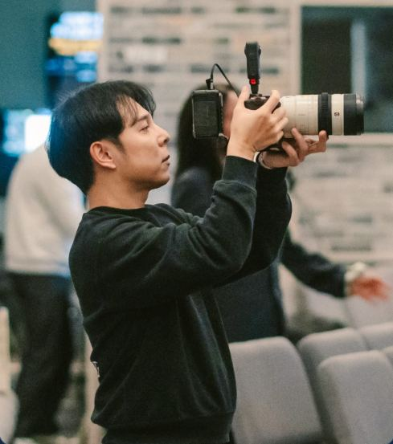
“언제! 짤라야 하는지 궁금합니다”
컷편집 강의 영상 댓글
“컷편집이 항상 어색해서 고민이 많았는데”
컷편집 강의 영상 댓글
“크기 차이나는 샷끼리 붙이는게 유독 어렵더라구요”
컷편집 강의 영상 댓글
다른 채널의 컷편집 강의 영상에 실제로 달린 댓글입니다. 플로우클래스 수강생 후기가 아닙니다.
기준 없이 많이 자르면, 같은 자리에서 계속 어색합니다.
효과는 튀는 자리를 가릴 뿐, 고쳐 주지 않습니다.
버튼이 해 주는 건 빨리 자르는 데까지입니다. 어디서 자를지는 사람이 정합니다.
속지 마세요.
비슷한 원본을 직접 찍어 똑같은 리듬으로 자르고, 나란히 놓고 비교합니다. 한 달만 꾸준히 하면 감이 생깁니다.
그래서 정답은
강의용 예제가 아니라 현장에서 납품한 원본으로 자릅니다. 수업용 원본은 드립니다.
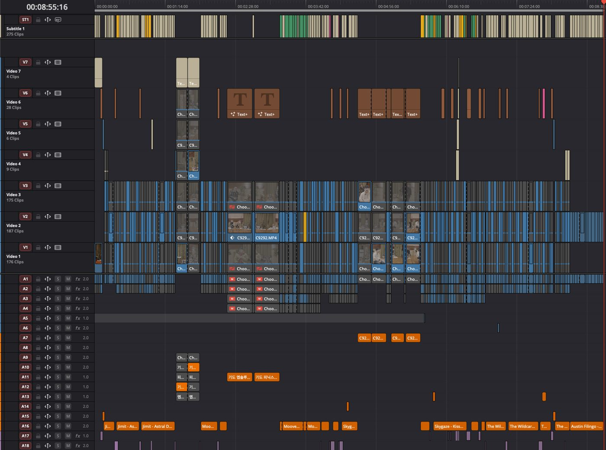
“여기가 튄다”를 바로 짚습니다.
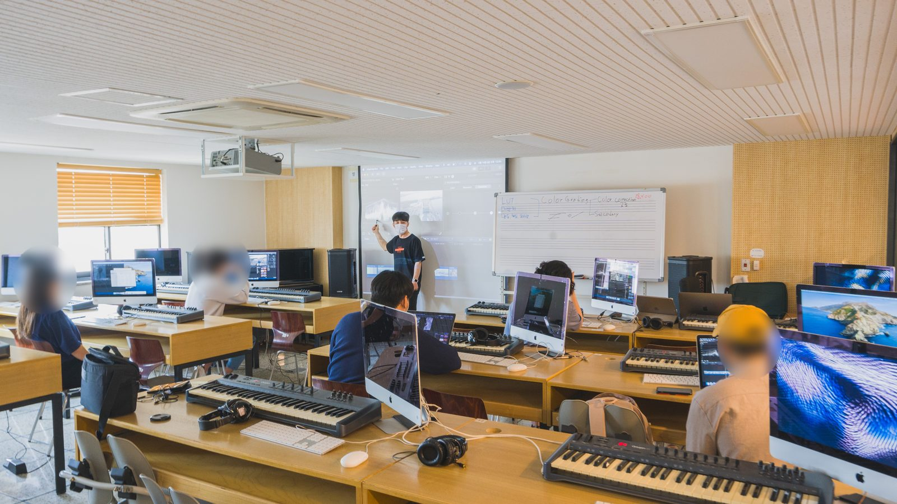
어디서 자를지, 무엇으로 덮을지, 소리를 어디서 넘길지 한 흐름으로 다룹니다.
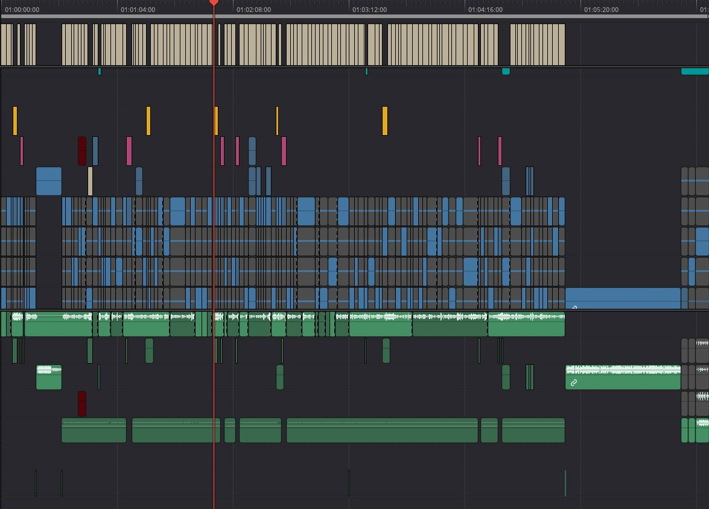
왜 다빈치 리졸브로 자르나
말끝이 끝나는 자리, 첫 단어가 시작하는 자리를 파형으로 눈으로 찾고, 테이프처럼 천천히 돌려 들으며 확인합니다.
잘라 놓은 자리를 다시 자르지 않고, 앞뒤로 몇 프레임씩 옮겨 보며 가장 자연스러운 자리를 고릅니다.
카메라 여러 대로 찍은 토크·행사 영상을, 모든 카메라를 동시에 보면서 각도를 바꿔 자릅니다.
장면 컷 감지 · 매직 마스크 · 스마트 리프레이밍 · AI 음성 분리. 이 수업은 Studio로 진행합니다.
기능 이름은 블랙매직 공식 홈페이지 표기 기준입니다.
매직 마스크 · AI 편집은 Studio 버전 기능
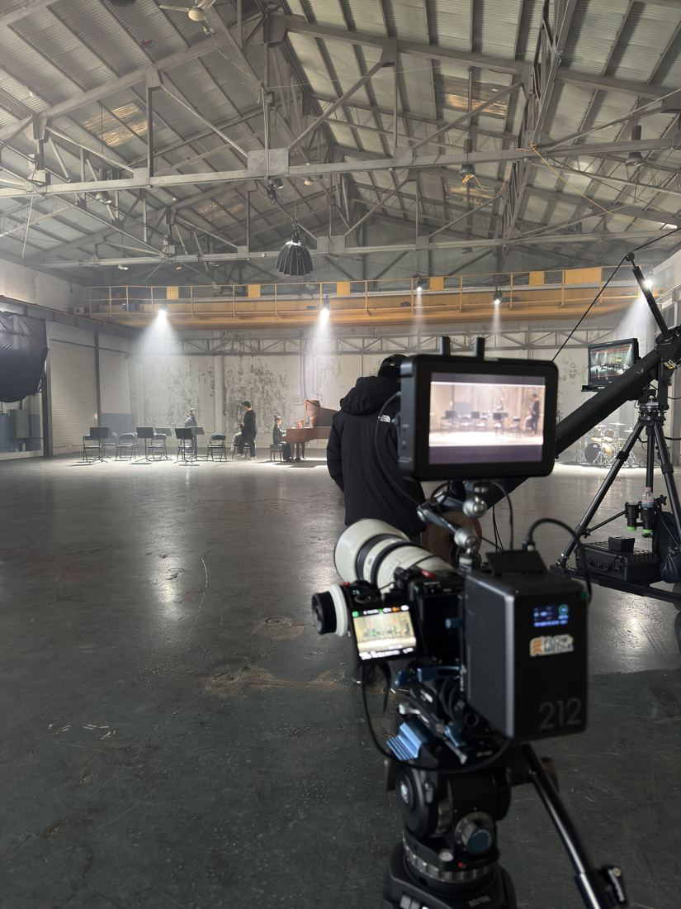
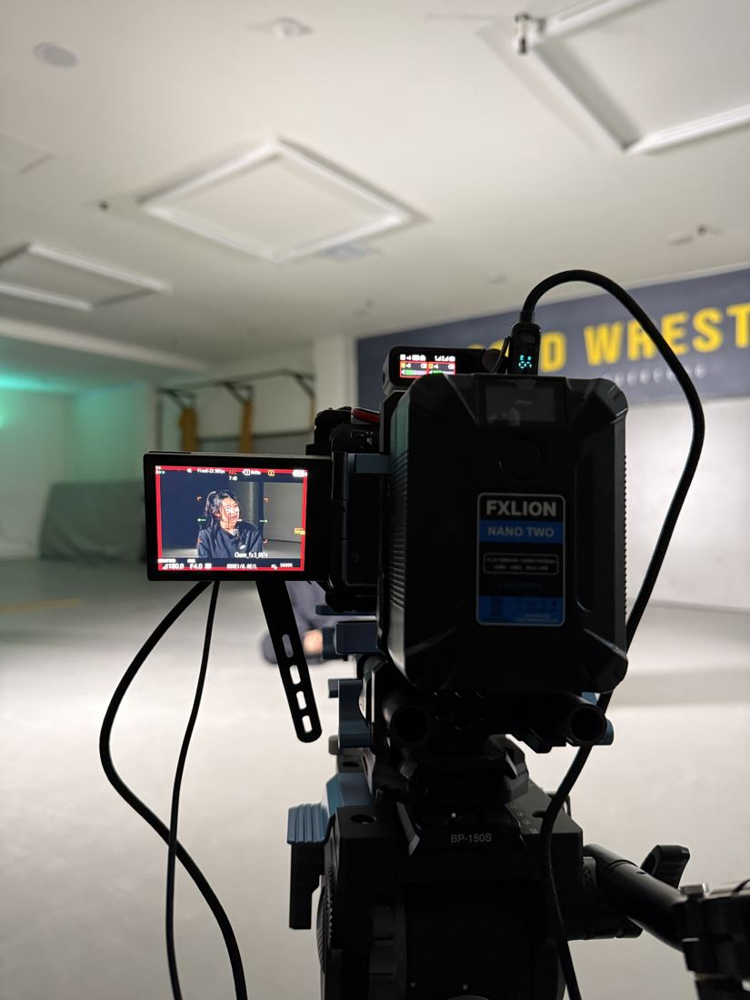
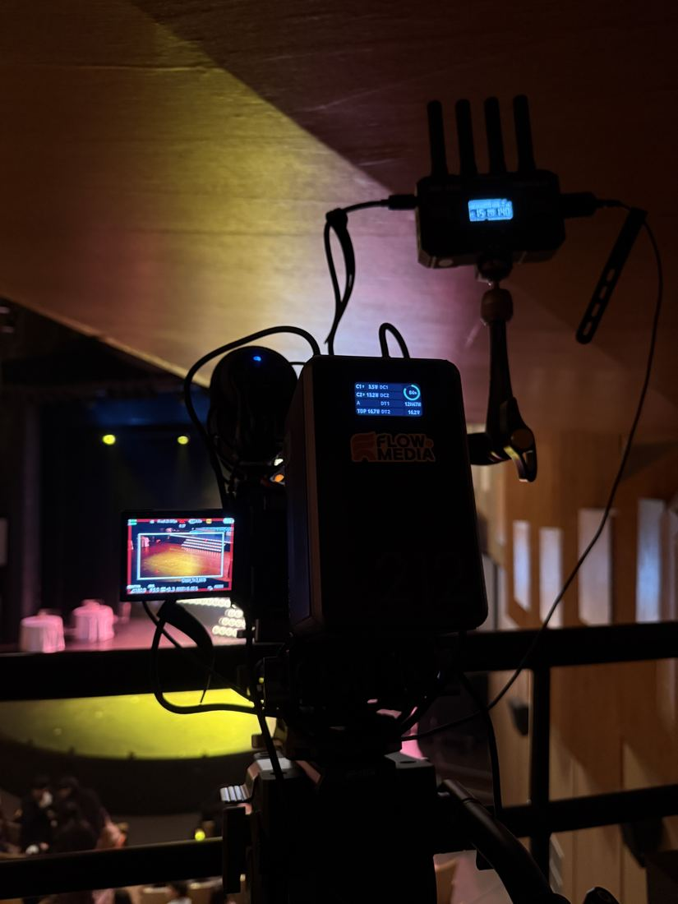
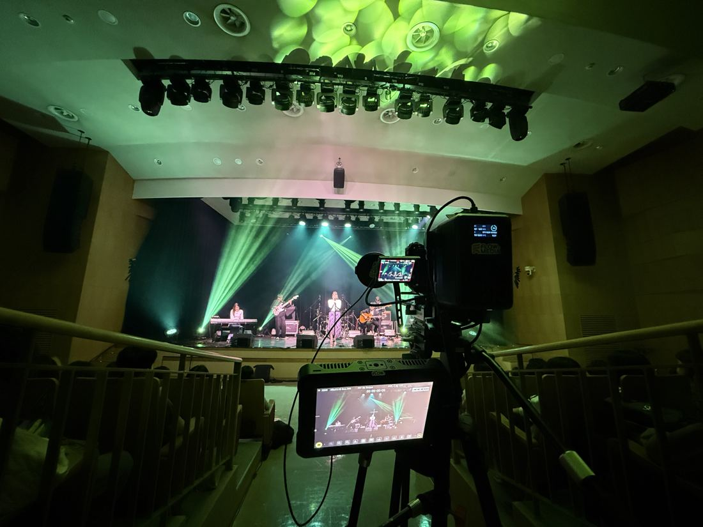
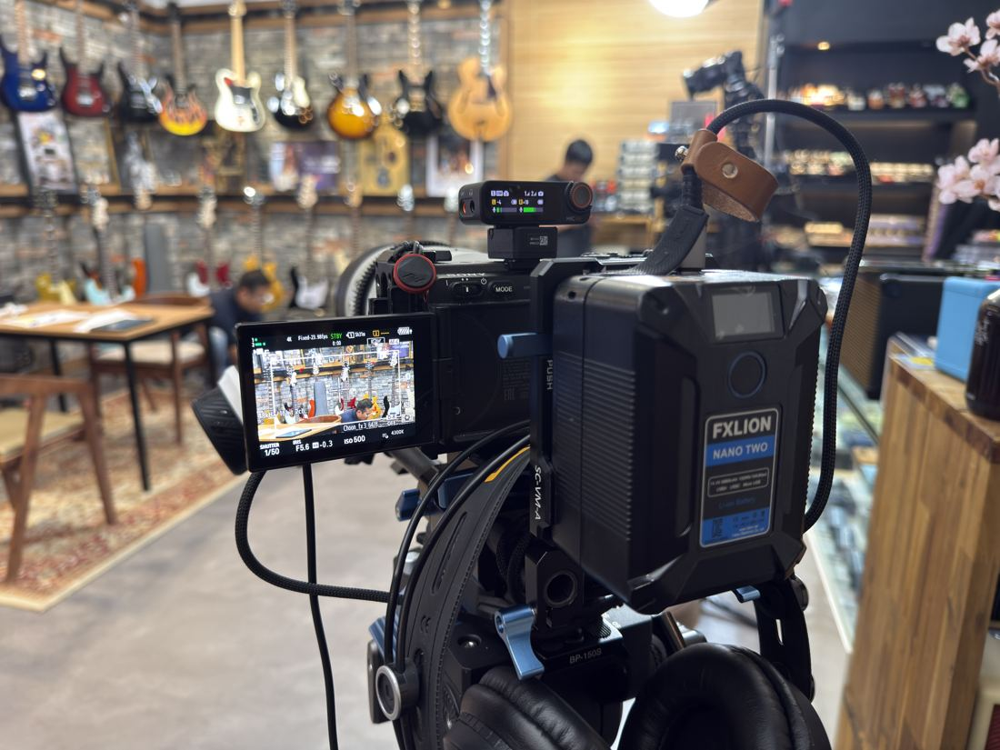
실제 촬영 현장 · 2025년 9~11월
| 유튜브로 독학 | VOD 강의 | 플로우클래스 편집 파트 | |
|---|---|---|---|
| 내 원본을 봐 주는 사람 | 없음 | 강의마다 다름 | 그 자리에서 같이 봄 |
| 연습하는 원본 | 직접 구해야 함 | 강의 예제 | 실제 납품 원본 제공 |
| 질문 | 댓글로 | 강의마다 다름 | 수업 밖에서도 카톡으로 언제든 |
강사
색보정 원데이 클래스(2026년 8월 · 10월) 수강생 무기명 설문 기준이며, 응답자 전원이 공개에 동의했습니다. 컷편집 파트 후기는 아닙니다.
네. 처음 시작하는 분도 들을 수 있습니다.
이 수업은 유료(Studio) 버전으로 진행합니다. 매직 마스크 같은 AI 기능은 Studio에서만 되고, 10비트 촬영본을 원활하게 다루는 하드웨어 가속도 Studio 기능입니다. Studio 한 카피는 408,800원입니다(블랙매직 공식 온라인 구매가, 2026년 11월 기준). 가격은 바뀔 수 있으니 구매 전에 공식 홈페이지에서 확인해 주세요. 그 프로그램으로 어디서 자를지 배우는 4주는 처음 3명 33만 원입니다.
보통 VOD 강의는 강의 예제로 연습합니다. 이 수업은 실제로 납품한 원본을 드립니다. 내 촬영본이 있으면 그것도 같이 봅니다.
DaVinci Resolve 공식 홈페이지의 권장 사양을 참고해 주세요. 블랙매직 공식 사양 페이지
보강해 드립니다.
수강생과 협의해서 정합니다.
8년 동안 납품하며 틀려 가며 익힌 ‘자르는 자리’를, 4주 8시간에.
처음 3명은 하루 약 1만 2천 원꼴입니다.
다음 기수 일정은 아직 정해지지 않았습니다. 알림을 신청하시면 일정이 열릴 때 가장 먼저 연락드립니다.
님, 알림 신청이 접수됐습니다. 일정이 열리면 가장 먼저 연락드리겠습니다.